Rishbha Jain · CS280A · Project 3 · Fall 2026
I used the pretrained PixNerd-XXL-P16-T2I model at 512 × 512 resolution. The experiments use float32 states and Euler integration with step size h = 0.02. Unless stated otherwise, creative experiments use classifier-free guidance weight w = 7. The base seed is 180. No model was trained in Part A.
x_t = (1 − t)ε + t x₁, ε ~ N(0, I)
The input is a photograph of a cat. I reused the same noise tensor at all three times, so the comparison changes the signal-to-noise mixture rather than the noise realization. At t = 0.25 the cat is difficult to distinguish; the outline and face become much clearer at t = 0.50 and 0.75.
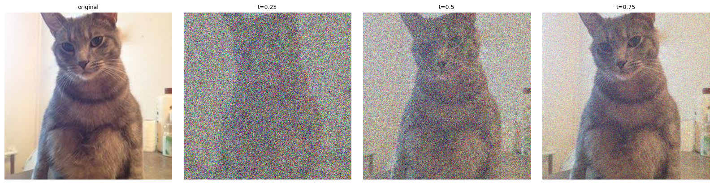
I divided each input by t to restore its image amplitude, then tested Gaussian blur with σ ∈ {1, 2, 4, 8, 16}. The notebook selects the blur strength with the lowest reconstruction MSE against the known original. I used the original image to choose σ, which would not be possible with an unknown clean image. At the lowest t, blur removes texture along with noise and leaves a smooth silhouette. At higher t, more fur and facial structure survive, but residual noise remains.
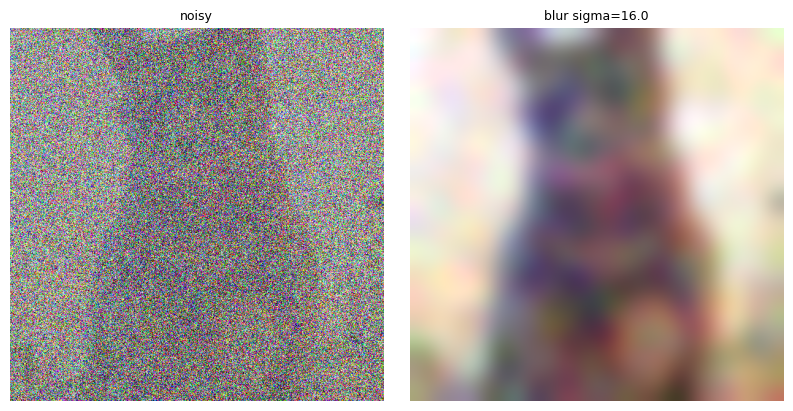
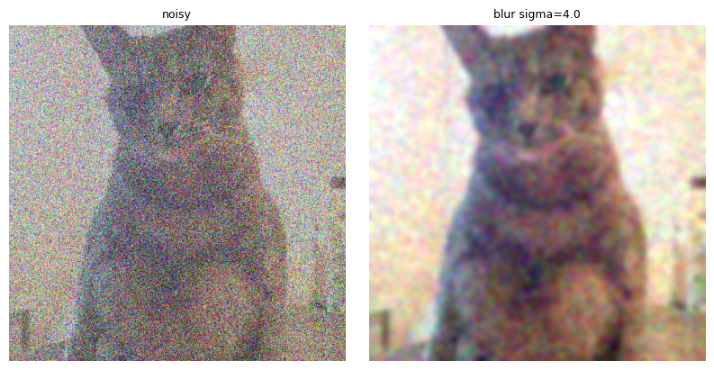
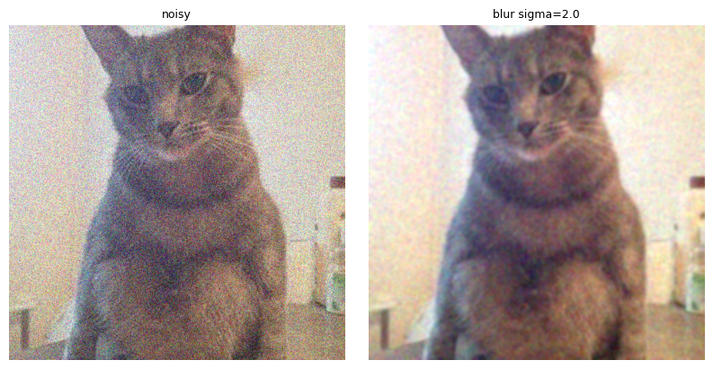
x̂₁ = x_t + (1 − t)vθ(x_t, t, c)
With the prompt “a high quality photo”, the model reconstructs a coherent cat even from the heavily corrupted t = 0.25 input. That estimate is smoother and changes facial detail, so visual plausibility does not imply exact recovery. At t = 0.75, the estimate retains substantially more of the original appearance.
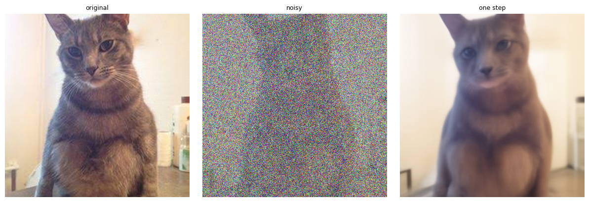
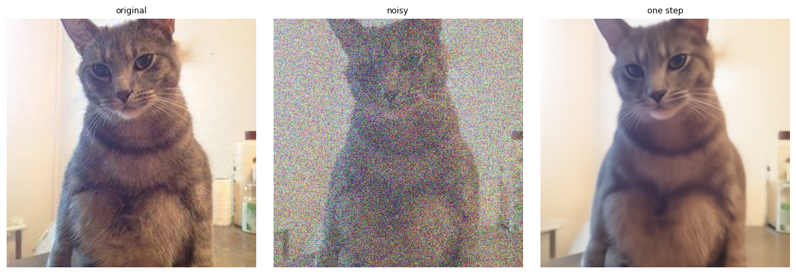
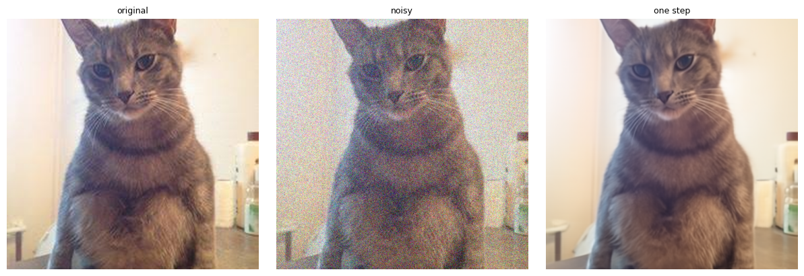
Predicted update = (1 − t)vθ Ground-truth update = x₁ − x_t Error = sqrt(mean_RGB((predicted update − ground-truth update)²))
The signed update plots use a common symmetric display range and the error maps share a linear color range. The predicted and exact updates are visually dominated by the noise-cancellation component; the heatmaps reveal the remaining differences. Errors are more prominent in the lower-t case, especially around image structure. The smaller updates at higher t leave less room for reconstruction error.
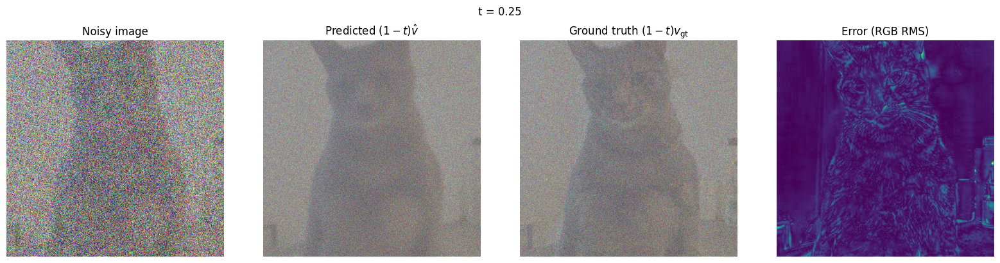
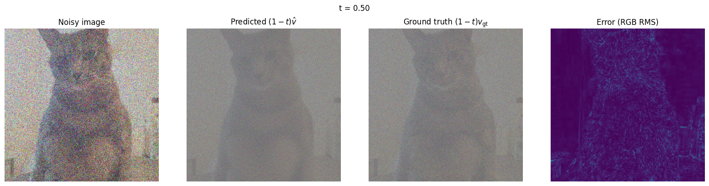
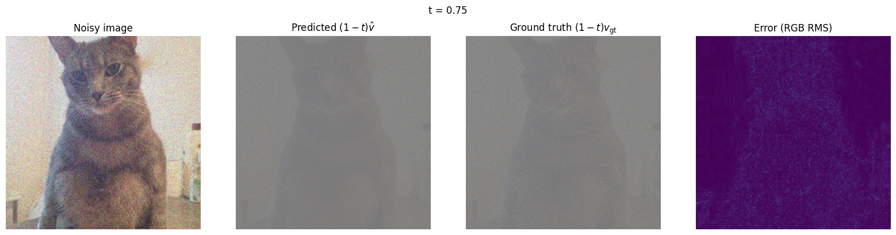
x_(t+h) = x_t + h vθ(x_t, t, c)
Starting from t = 0.50, I used 25 updates and recomputed velocity at each state. The image becomes progressively cleaner. In the final comparison, Gaussian blur has weaker detail and visible corruption, while both learned estimates recover a recognizable cat. Euler denoising produces a coherent, cleaner result, but can still alter fine details of the reference.
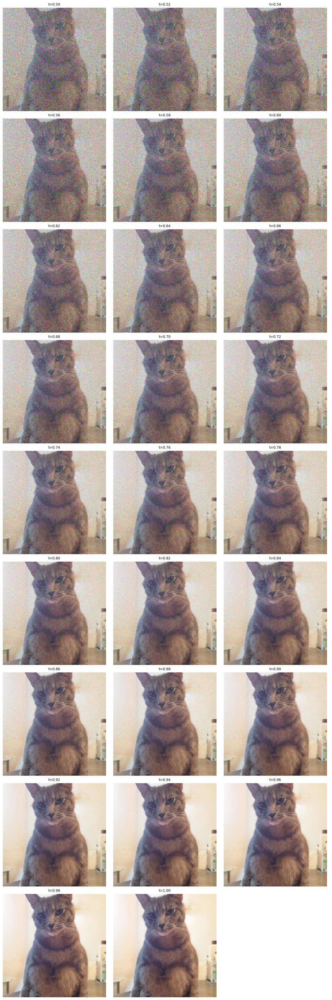
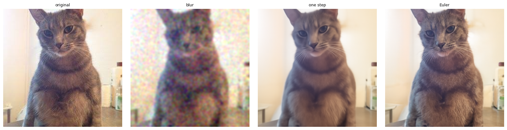
The implementation also checks constant-velocity integration, including a shortened final step for a start time of 0.93.
v_CFG = v_c + w(v_c − v_u)
I generated five samples with seeds 180–184 and the prompt “a high quality photo”, then reused those seeds with w = 7. The generic prompt strongly favors portraits in this small sample. Without guidance, several images are soft or painterly. With guidance, the portraits look sharper and more photographic, with clearer facial features. The seed-matched subjects can change considerably.

I interpolated each source with noise, then integrated from the starting time to 1 using the generic photo prompt. Each sweep uses starting times 0.02, 0.04, 0.06, 0.10, 0.14, 0.25, and 0.50. Smaller starting times remove more information. The Campanile becomes an abstract pale tower at low t, while higher t restores its clock and architectural detail. The cat and dog similarly lose their identities at low t and recover recognizable source structure as t increases.

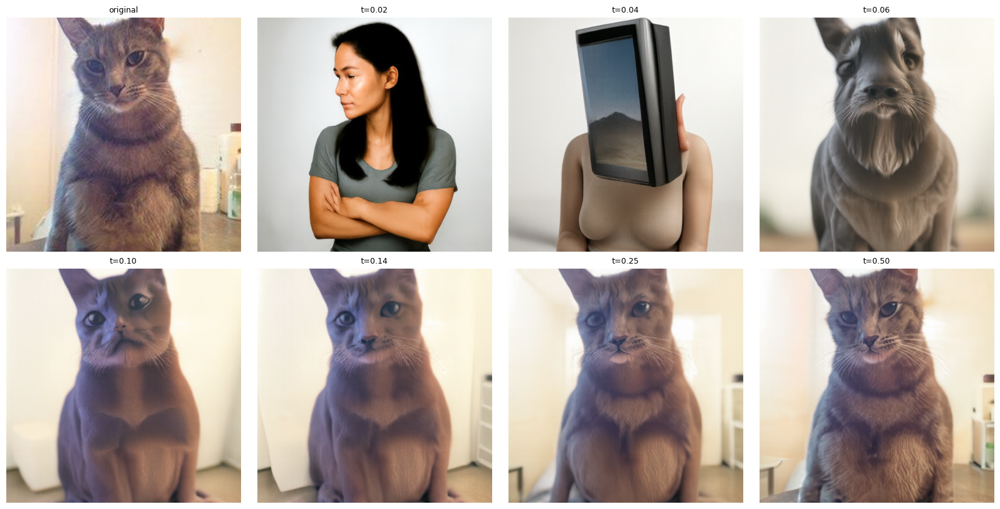
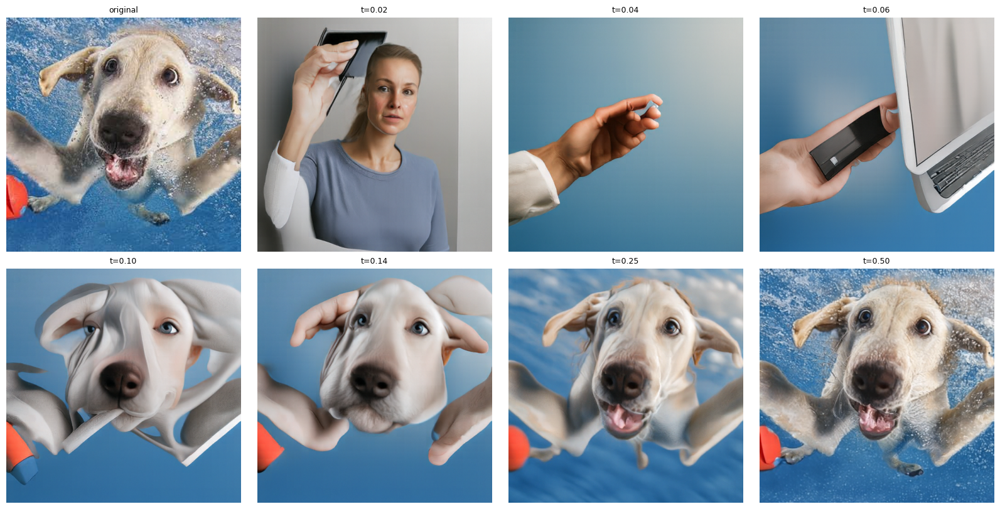
The web-image sweep reuses the cat image. At low t it can become an unrelated portrait or object; at higher t the cat returns. The two sketch sweeps also show a transition from unrelated interpretations to preservation of the drawing. In the first sketch, low-t outputs resemble household objects; in the second, the cat drawing can be interpreted as mechanical or architectural shapes. Increasing t preserves the original line work.

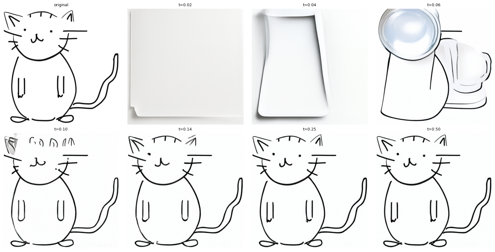
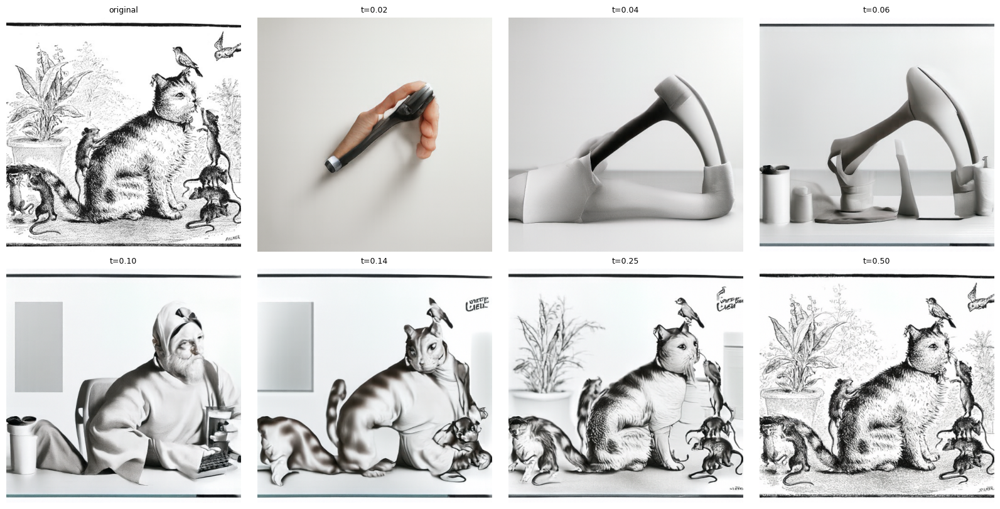
I kept the same starting-time sweep and changed the prompt for each source. At low starting times the text has more influence; at high times the original often dominates. The rocket prompt changes the Campanile into a smooth launch-vehicle-like structure, while the tower remains at t = 0.50. The cat-to-dog sweep introduces a dog-like face at intermediate times. The dog-to-mouse result is less convincing: several outputs retain the source dog or become a stylized creature rather than a clear mouse.
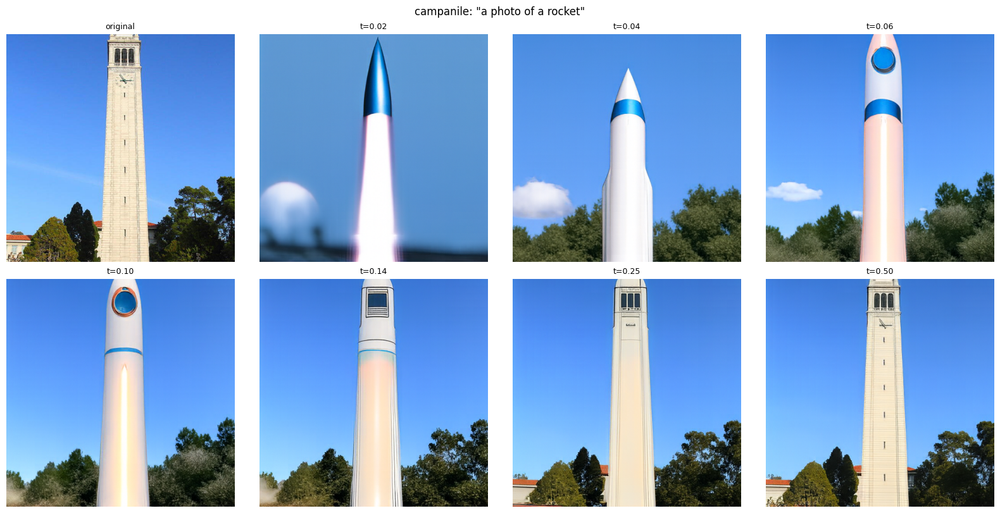
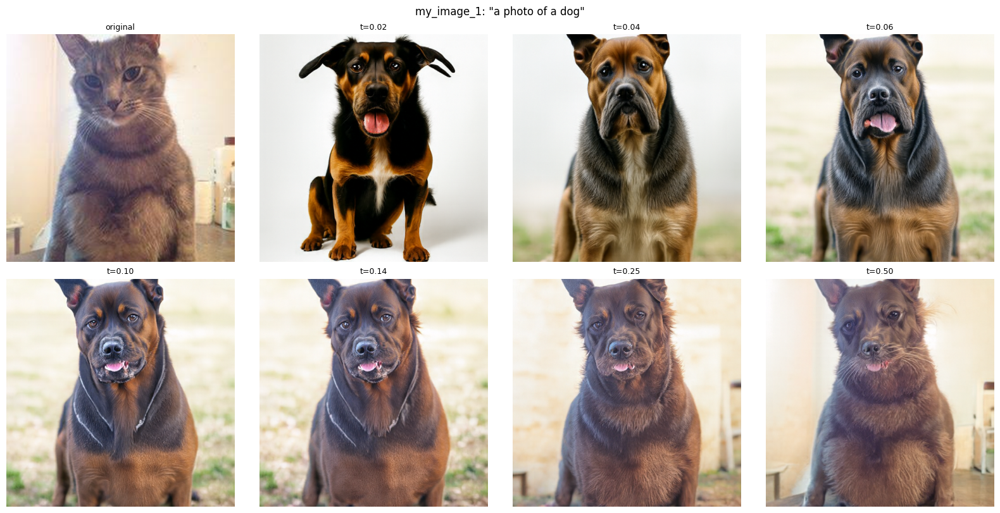
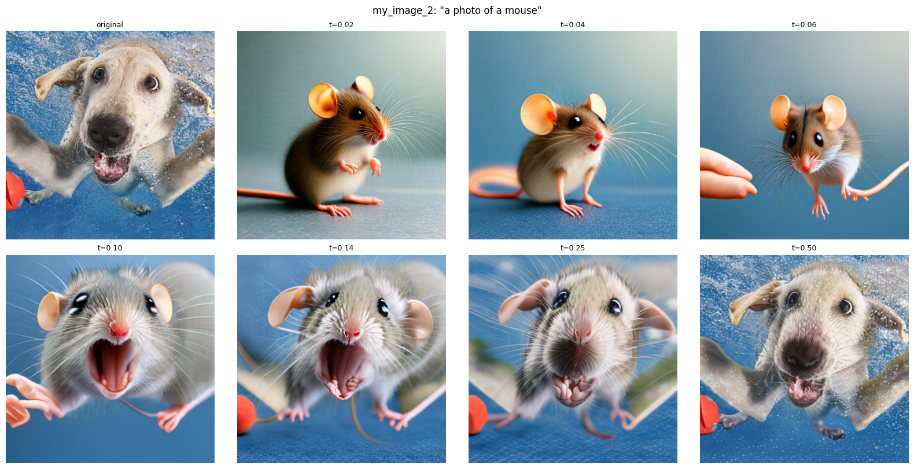
For each step, I predict guided velocities in the original and rotated views, rotate the second prediction back, and average before the Euler update. The old-man/campfire pair gives a recognizable warm-toned face in the upright view and a fire-like composition upside down. The village/horse pair is weaker: the village is apparent, while the horse requires a more generous interpretation. The first illusion worked better than the second.


v = lowpass(v_a) + v_b − lowpass(v_b)
I combine low-frequency velocity from the distant prompt with high-frequency velocity from the close prompt, using Gaussian σ = 16 and kernel size 265. The waterfall detail is clear at full size, while the smaller image looks more like a skull. The second result has forest-like trunks at full size and a rounded, ear-like global outline when reduced. The cat interpretation is subtler than the close-up forest.


I generalized the anagram sampler to an invertible transformation T: average v_CFG(x,t,a) with T⁻¹(v_CFG(T(x),t,b)). Inverse-transform checks passed for a 90° rotation and horizontal reflection. The 90° result reads as a blue-and-gold landscape in one orientation and a turreted castle in the other. The mountain is less distinct than the castle. The horizontal reflection is a weaker outcome: both views look predominantly like a fox, so reflection does not convincingly reveal a separate cat identity.
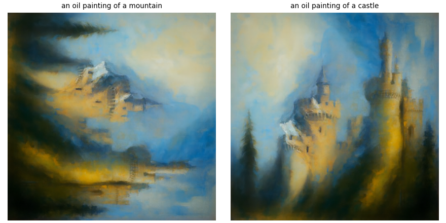
I drew a camera icon and edited it at starting times 0.10, 0.25, and 0.50 with the prompt “a minimalist university computer vision course logo, elegant blue and gold design, stylized camera icon, flat vector illustration, clean white background”. The outputs preserve the camera silhouette. The t = 0.10 version adds a dark blue tint and a faint extra mark, but does not achieve a clear blue-and-gold redesign. Larger t values nearly reproduce the drawing. The shape was preserved, but the style changed less than I wanted.
I trained on MNIST training images and inspected held-out denoising examples and generated samples. The UNet uses convolution, batch normalization, GELU, downsampling, upsampling, and channel-wise skip connections. Denoising predicts an image; flow matching predicts velocity.
z = x + σε Loss = mean((Dθ(z) − x)²)
The denoiser uses D = 128, Adam with learning rate 10⁻⁴, batch size 256, and five epochs at σ = 0.5. Fresh Gaussian noise is sampled for training batches. The noise sweep shows how digit structure is progressively obscured as σ rises. Training loss falls steeply at the start, then levels off. After five epochs the model recovers legible strokes from heavily corrupted inputs, though some digits remain rounded or ambiguous.
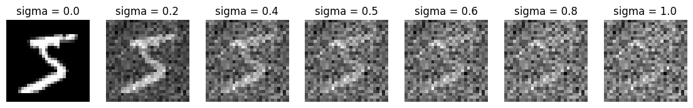
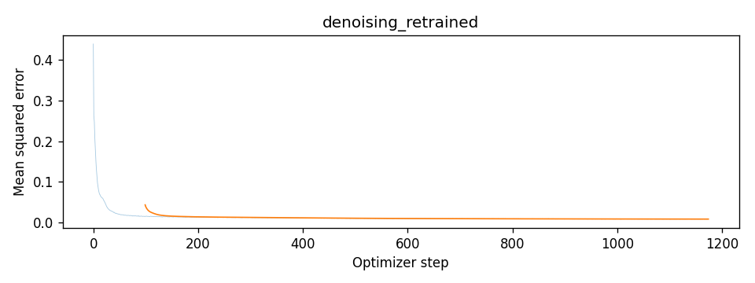
On the same test images and fixed noisy inputs, the epoch-1 model already recovers the digit identities, but leaves softer edges and more residual artifacts. At epoch 5, the strokes are sharper and the background is cleaner, particularly around the 7, 2, and final curved digits.
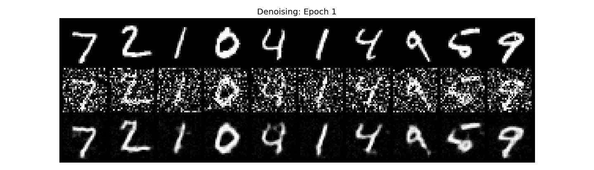
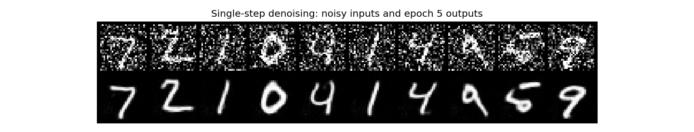
I held the test digit and noise realization fixed while varying σ. The model is most directly matched to σ = 0.5, but also removes noise at nearby levels. The high-noise outputs become less reliable because much less digit evidence remains. Even the clean input is processed by a network trained for noisy inputs, so identity preservation is not guaranteed.
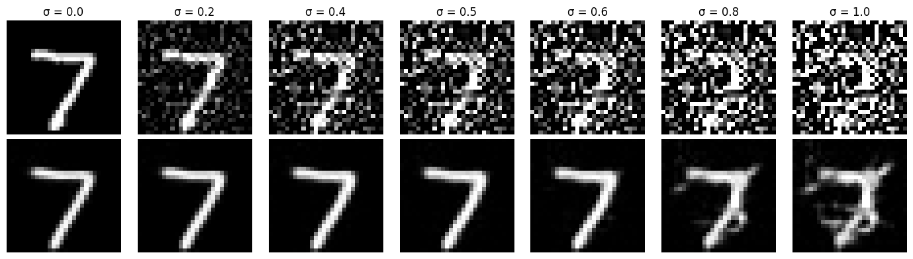
I trained a fresh D = 128 model with the same denoiser hyperparameters, replacing inputs with Gaussian noise independent of the target digit. At both epochs 1 and 5, outputs look like nearly repeated blurry mixtures of digits rather than diverse samples. MSE favors E[x | ε]; because ε and x are independent, this reduces to E[x], the mean training image. Thus decreasing loss does not make this model a useful digit generator.
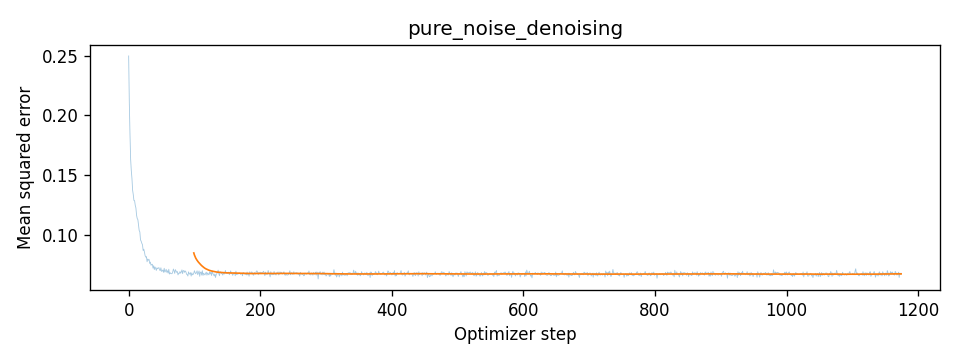
x_t = (1 − t)x₀ + t x₁ Target velocity = x₁ − x₀ Loss = mean((uθ(x_t,t) − (x₁ − x₀))²)
I used a D = 64 time-conditioned UNet, batch size 64, Adam starting at 10⁻², and ten epochs. Two FCBlocks embed time for modulation at two decoder stages. The exponential scheduler multiplies the learning rate by 0.1^(1/10) after each epoch. Sampling integrates from Gaussian noise with 50 Euler steps. At epoch 1 several strokes are fragmented or difficult to interpret. By epochs 5 and 10, most displayed samples have clearer digit-like contours, although some remain ambiguous.
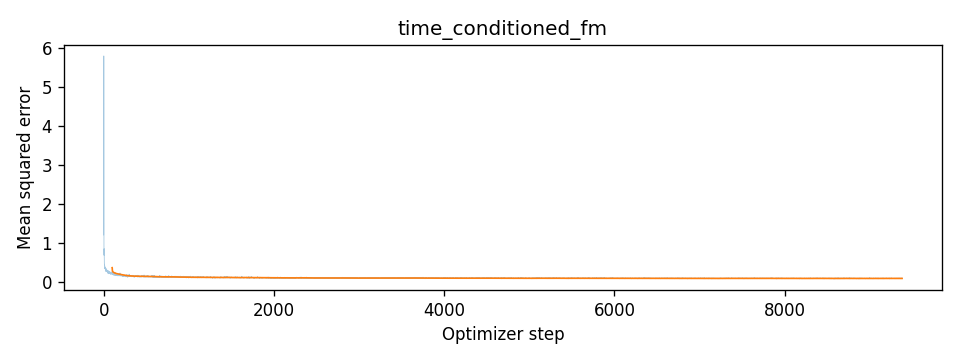
I added one-hot digit conditioning through two additional FCBlocks, using c₁ × features + t₁ and c₂ × features + t₂ at the conditioning stages. Class vectors are dropped with probability 0.1 so the model also learns an unconditional branch. Training uses D = 64, batch size 64, Adam starting at 10⁻², and ten epochs with exponential decay. Sampling uses 300 Euler steps and guidance scale 5. Each row below contains four samples of its requested digit, ordered 0–9.
The class-conditioned grids already show recognizable requested classes at epoch 1. Later checkpoints give cleaner, more consistent shapes, while retaining variation within a row. Some early samples, especially complex curved digits, are malformed. Class conditioning gave me more control over which digit was generated.
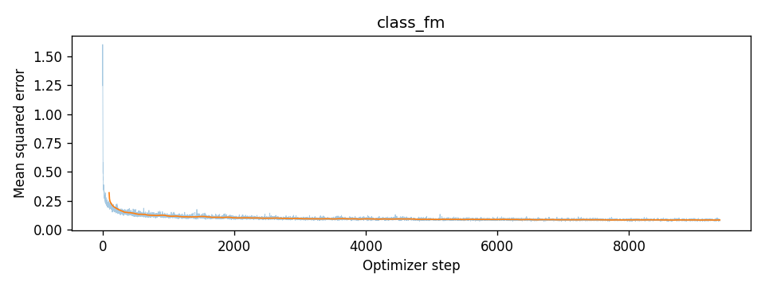
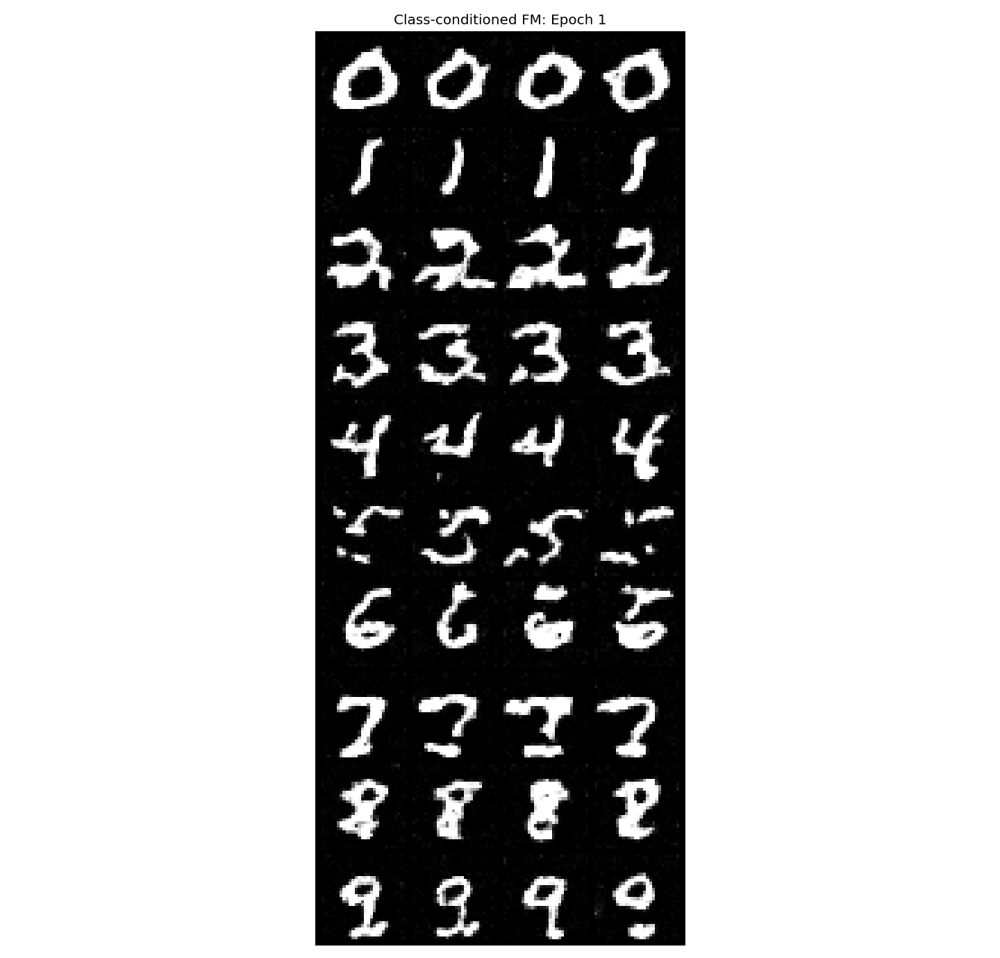
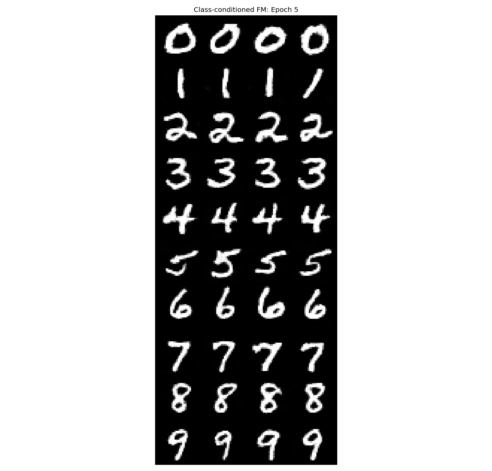
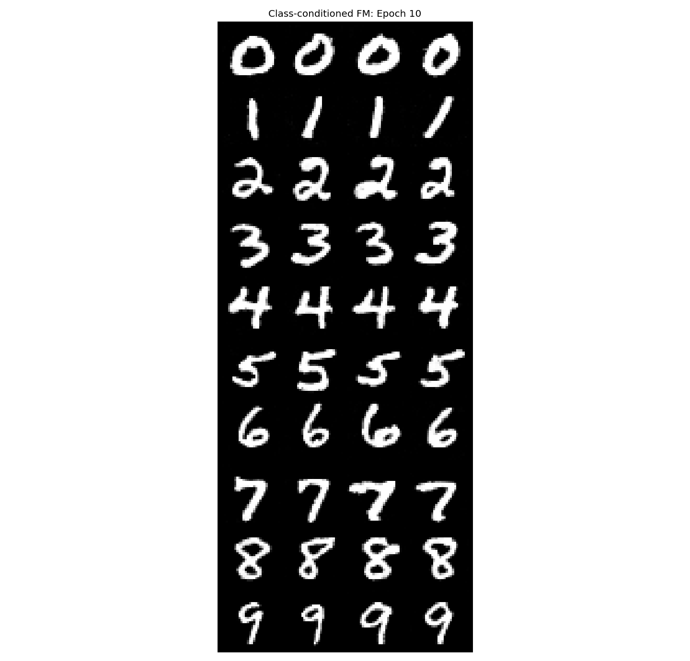
I trained a separate model from scratch for ten epochs with a constant learning rate of 10⁻³. The lower rate compensates for removing decay and avoids keeping the initial 10⁻² rate throughout training. Both loss curves decrease to similar final levels in the plotted comparison; the constant-rate model is slower early on. Its final grid still contains recognizable examples of all ten requested classes. The results look comparable, although I only compared one run of each setup.
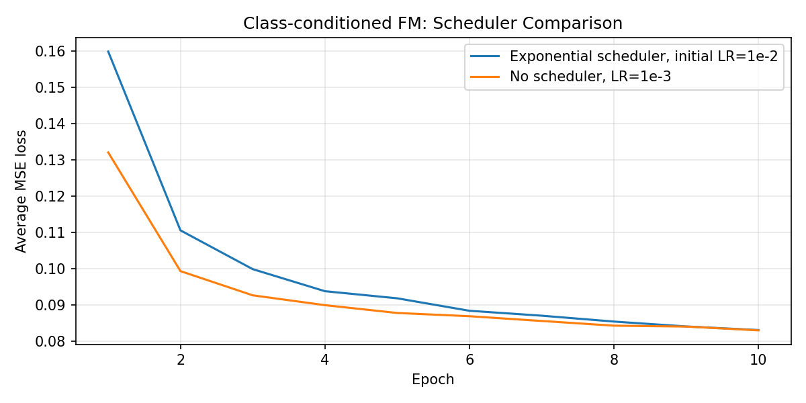
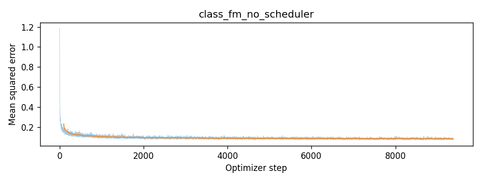
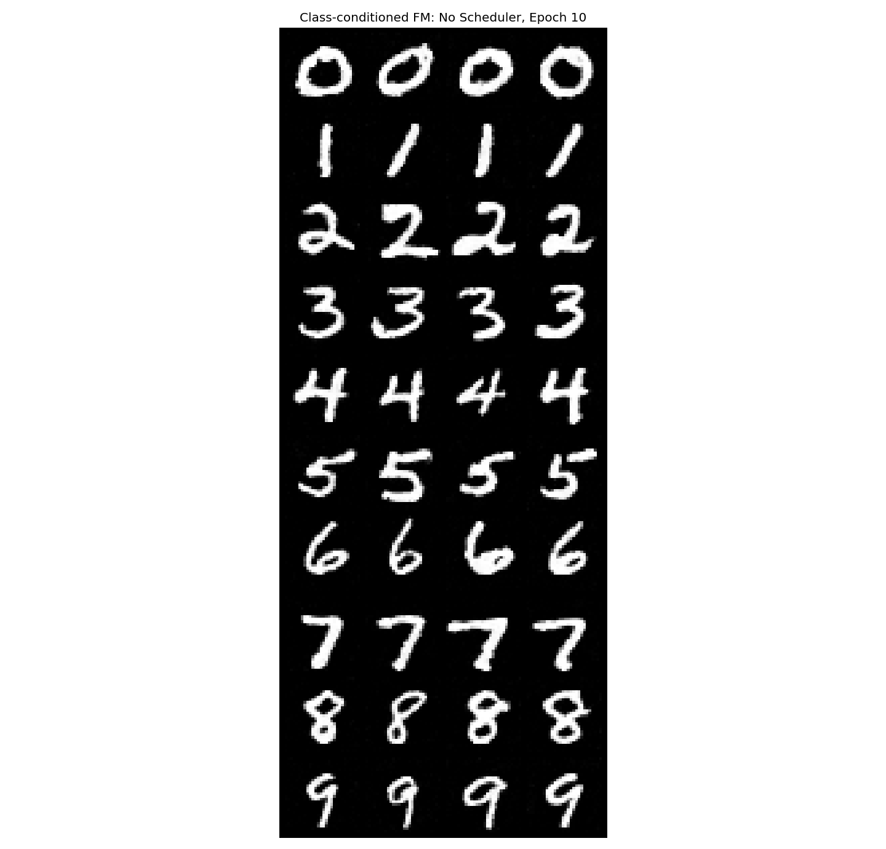
I resumed the epoch-10 time-only checkpoint, including Adam and scheduler state, and trained ten more epochs with the same architecture. The additional epochs produce modest refinements in stroke shape rather than a dramatic transformation. In the fixed-seed comparison, most digit identities remain stable. Several samples are clearer by epoch 20, but ambiguity is not eliminated.
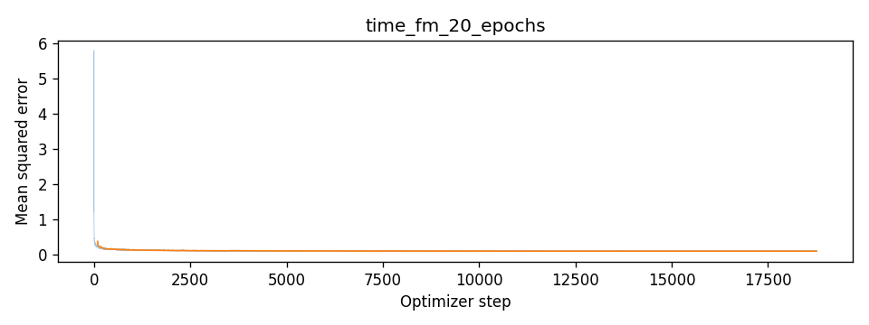
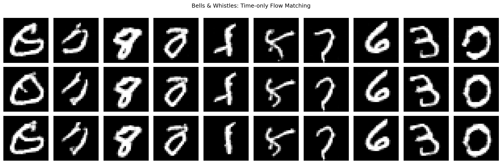
I also resumed epoch 10 with Adam state restored and held the learning rate at 10⁻³ for ten further epochs. This is a separate extension from the decaying-rate run. The resulting digits remain recognizable, with some changes in curvature and identity. I did not see a clear advantage over the decaying learning rate.
Using the same epoch-20 time-only model and seed, I compared 50-step Euler with 50-step Heun. Heun averages the velocity at the current point and an Euler-predicted endpoint. Both grids look similar; any improvement is subtle in these samples. Heun uses about twice as many network evaluations at the same step count, so this is not an equal-compute comparison.
The Euler step sweep shows the largest changes between 10 and 25 steps. At 50, 100, and 200 steps the overall samples are much more similar, suggesting diminishing visible returns from finer integration for this checkpoint. More integration steps cannot correct every error in the learned velocity field.
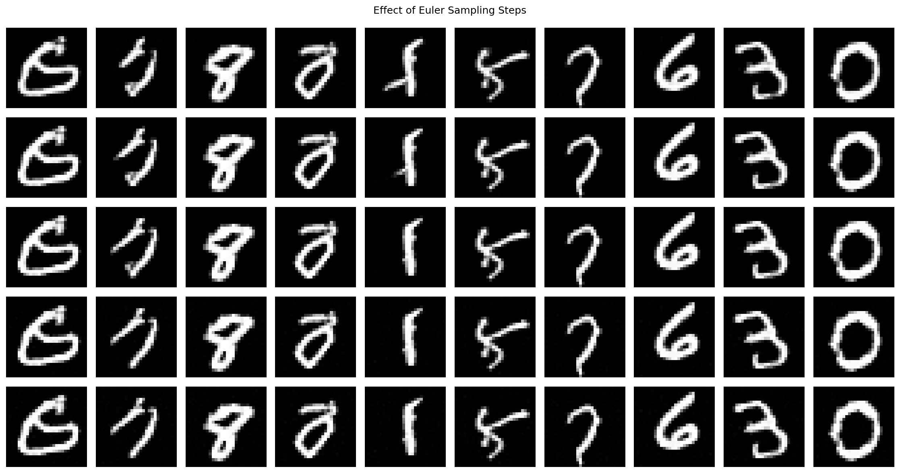
References: overview, Part A, Part B. Methods: Visual Anagrams and the course-provided PixNerd adapter and notebooks. Code: GitHub repository.